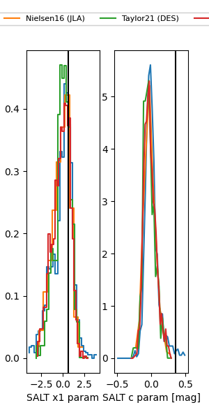

TNS: 2025wsl
YSE: 2025wsl
2025wsl (yse,tns)
PS25hhl (panstarrs)
equatorial (ra, dec) = (36.9420,-3.86903)
galactic (l, b) = (171.8209,-57.29235)


last atlaso=19.04, ps1::g=19.48, ps1::i=19.22, ps1::r=18.95, ps1::z=19.20
1 atlaso, 2 ps1::g, 4 ps1::i, 5 ps1::r, 1 ps1::z detections